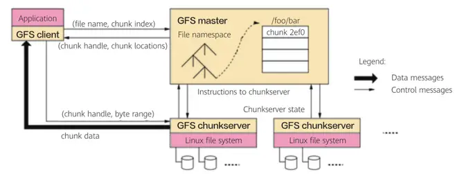
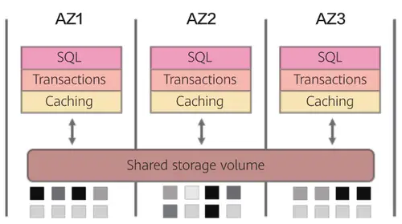

存算分离是否成为开源分布式数据库主流架构？
随着软件定义存储的不断发展，越来越多的开源分布式数据库在特殊的数据存取领域站稳了脚跟。而这些百花齐放的解决方案，不免让大家眼花缭乱。企业的 IT 架构是否会随着这些技术的发展而呈现革命性的变化？存算分离架构是否会成为开源分布式数据库发展下的主流架构？这些问题都需要在一定的理论和实践沉淀之后来得出结论。
存算耦合架构，路在何方？
一切故事的起点都始于 2000 年。那一年基础设施的性能远没有如今这么强大，HDD 的性能吞吐大约在 50MB/s，即使通过多块 HDD 并行接入也只能提高到 1GB/s。网络配置更是相形见绌，主流解决方案的带宽仅是百兆级别，跨网络远程访问数据的效率实在太低。时势造英雄，划时代的一天来临，Google 前瞻性的提出了 the Google File System（GFS）文件系统，首次采用标准的 x86 服务器和普通硬盘搭建了大规模集群。GFS 通过计算和存储耦合的架构，在同一个集群中实现了计算和存储功能，同时另辟蹊径，抛弃了 " 移动存储到计算 " 策略而采取 " 移动计算到存储 " 的设计，利用本地的高 IO 效率来置换网络间传输的效率，彻底解决了分散在低效网络上各存储节点间的海量数据访问问题。

图 1 Google File System 架构
GFS 开创了存算耦合架构的先河，继承与发扬这个理念的集大成者 Hadoop 更是将其提升到了一个新的高度。随着 Hadoop 掀起的分布式浪潮，针对存算耦合架构深层次的思考也呼之欲出，存算分离还是存算一体？
纵观过去的 20 年，我们在算力、网络、存储方向的发展上都有了质的飞跃，然而横向对比却又不难发现三者并不是等效发展。网络，从此前主流 100Mb 到如今 10GbE 就绪，甚至迈进 25GbE、40 GbE，赶超了 100 多倍；存储，HDD 硬盘的性能提升虽然没有网络的大飞跃，但得益于 SDD 制程和工艺的迭代，存储领域也有了相当显著的进步，NVME 的应用已经炉火纯青；而回到算力上，即便是处理器工艺已经迈入 7nm，算力的提升也远不及前两者的跨越。非平衡的三元演进趋势，加之数字化转型中不同阶段衍生出的差异性需求，迫切的期待创造一个更加随心的架构形态。
存算分离架构（Disaggregated Storage and Compute Architecture）似乎更像是当下的众望所归，充分契合如今的信息技术格局与各行业务境况，其得天独厚的优势也相得益彰：
更灵活的选择。计算资源与存储空间的配置互不制约，即使身处在形态各异的业务场景，都可以因地制宜构建个性化的配比，充分匹配业务的每一项资源要求。
更高效的扩容。计算资源先达到瓶颈，存储空间先达到瓶颈，都能够进行独立、按需扩容，持续保障存算资源的高效使用，杜绝存算一体扩容时带来的资源浪费。
更安全的隔离。存、算各司其职，形成逻辑隔离。计算节点不再承担数据存储，计算节点动态增减甚至是故障宕机，无需大量数据的迁移，丝毫不影响数据存储的可靠性与完整性。
有意思的是，若我们以发展的眼光去审视存算一体（Process In Memory）架构，同样是一番美好的前途愿景：存算一体架构不再关注存算的配比，而将计算及存储核心的实现归集于同一块芯片上，所有的计算全部在存储内部实现，无需数据的读出和写入，完全没有外部开销，性能全面超越的同时降低了计算和存储的综合运维管理成本，极富竞争力。彩虹固然绚丽，但我们也得直视前夕的飘摇风雨：存算一体架构的实现究其根本是芯片的高纬挑战。目前基于 SRAM 或 DRAM 的存算一体方案受限于存储器厂商对工艺和制程的客观约束，都无法深入到存储单元实现计算和存储的完全耦合。同时存算芯片也无法满足高密度、高精度双重标准兼备下的融合计算，芯片开发设计的生态亟待打造。最后，计算高性能的标准叠加存储的高容量要求极大限制了存算一体架构的应用落地场景，计算和存储的完美融合仍是一座静待征服的高峰。
聊罢存算架构的耦合，让我们将视线重新回归到架构实践上，哪个方向正在运用存算分离呢？非常重要的一个应用场景便是分布式数据库，例如 Aurora 就已于云原生服务侧率先落地了计算与存储的分离。

图 2 Aurora 体系结构
Aurora 体系结构整体呈现 share disk 共享磁盘模式，接口与解析均在计算层，logging 和存储从数据库引擎剥离到了分布式云存储环境中，通过将共享存储构建为跨多个数据中心的独立容错和自愈的服务，基于持续异步复制的机制，使得存储层中的数据免受性能差异、单节点故障等多重影响。云存储数据持久化以及高效同步，对于 Aurora 的稳定支撑与持续优化起着决定性的作用。
不妨让我们对存算分离的 " 存 " 多一分寻味，Aurora 存储服务的核心设计准则即是最小化前端写请求的延迟，贴合高频交易的业务场景快速响应业务请求，将大部分存储逻辑的处理移动到后台，覆盖多重手段去平衡前端和后台的负载健康，借助 CRC 校验实现坏块的主动发现与修复，从而各存储节点依靠 logging 最终完成数据对齐。Aurora 的创新，更侧重所依赖的共享存储，不是简单的数据共享，而是一个拥有架构独立、自动同步、容错、构建高可靠性的共享存储服务系统，这就对存算分离架构提出了一个新的标准，也开阔了一个新的发展方向。
对于存算分离架构的理解，一般理解的焦点都在 " 分离 " 上，而 Aurora 的实践更生动阐释了古典文学上 " 形散神聚 " 的意义，存算既已分离，我们的目光也应志在长远：如何将存与算在两个独立的个体间建立功能、性能、机制上的全栈协作，存算通达，功能并进，是一个更有意思、更富挑战、更耐人寻味的话题。放眼当下，我们似乎能从另一辆飞驰的分布式快车上——超融合（Hyperconvergence Infrastructure）解决方案，找到一个粗浅的现实释义：超融合，融合的是基础架构的计算和存储，计算和存储不再是孤岛，Hypervisor 计算层能够高效、直接的通过底层开放生态与分布式存储联动，嵌入高级功能实现精确的 Metadata 元数据管理；超融合，分离的也是计算和存储，但是是自身向上服务的功能层，计算层专注支撑虚拟化业务应用的拟态运行，存储层则作为数据的核心承载，借助分布式的动态弹性派生出多种兼容的存储协议，持续提供存储服务。
存算架构的耦合，是分离还是一体？大道至简，殊途同归，信息科技的发展仍充满着诸多不确定性的惊喜，期待着存算分离架构下更多成熟方案的落地实践，同样也对存算一体的卓越性能超越怀有希冀，心向光明，未来可期。
张俊禧 长安银行存储架构师：
存算一体的架构随着运用的深入突显出了一些弊端，而存算分离的技术优势在于：存储冗余性高、资源扩容灵活、CPU 利用率高。存算分离架构很可能成为开源分布式数据库发展下的主流架构。
存算一体的分布式架构还没能撼动传统 IT 架构的主流地位，存算分离的技术架构却异军突起成为分布式应用的宠儿，是旧瓶装新酒回归传统，还是破茧重生的技术革新，本文将对存储与计算的分分合合发表自己的看法。
为了突破传统数据库性能的瓶颈，分布式数据库应运而生，更好的支撑了双十一这类业务量暴涨的场景。存算一体的架构使用廉价的服务器加本地盘的方式，构建出分布式服务器集群，将计算和存储融合呈现，采用多副本的方式保证数据冗余和系统的可靠性，突破了传统 IT 架构不能灵活扩容，采购成本高的弊端，很好地契合了分布式数据库的部署要求。但是存算一体的架构随着运用的深入突显出了一些弊端：
1）存算一体不可避免地存在 CPU 的争抢。由于服务器的 CPU 资源不仅要承担虚拟机或容器计算的需求，还需要用于分布式存储复杂的数据管理任务，有限的 CPU 在业务繁忙的情况下往往顾此失彼。
2）计算和存储资源扩容不可能一致的同比例的被消耗，往往一项紧张，而另一项存在过剩。存算一体的分布式架构每次扩容同时添加了 CPU 和硬盘容量，导致资源利用率不高。
3）由服务器构建的存储冗余性不足。通常存算一体的分布式系统其本盘不做 RAID 保护，靠多副本实现数据冗余，冗余多高资源利用率低。服务器的可靠性有限，服务器故障导致失效硬盘多，副本冗余度降低，重构所需的漫长。数据分散的均衡性需要依赖厂商调节优化的实力。
存算分离的技术优势在于：
1）存储冗余性高。特别是高端存储从体系架构设计出发提供了超高的故障容忍能力，可靠性高。
2）资源扩容灵活。计算资源可以在业务繁忙时按需扩容给，由于所有计算节点访问共同的存储资源，计算资源添加非常灵活迅速。
3）CPU 利用率高。存储不消耗计算节点的 CPU 资源，计算节点专职负责数据库的运算，而且存储性能的提升有利于充分发挥服务器 CPU 利用率。